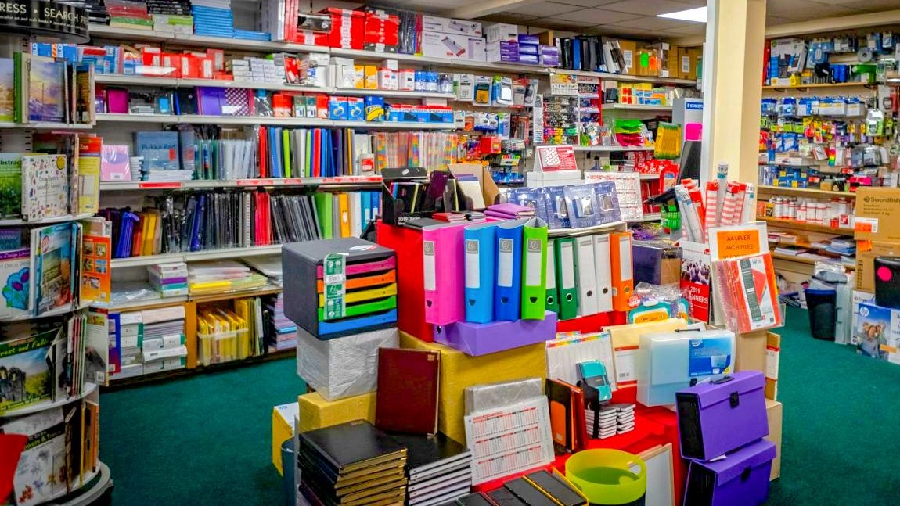

About
I have recently completed a Data Analytics program with RevoU, an online learning platform specializing in the digital industry to enhance career development. During the course, I worked on various projects to apply the knowledge I gained. Among these projects, I tackled real-world datasets provided by a company collaborating with RevoU, as well as datasets obtained from online sources such as Kaggle and Data World.
In these projects, I conducted data cleaning to prepare the datasets for analysis. Subsequently, I performed in-depth data analysis, explored key insights, and developed data processing techniques to provide valuable insights and recommendations for the company. RevoU's program provided me with the skills and expertise to contribute to a company's sustainability through data analysis.
RevoU is known for its focus on the digital industry and offers instruction from industry leaders in Indonesia, including Gojek, JULO, Tokopedia, XL Axiata, and more. This unique approach allows students to learn directly from professionals with real-world experience, enhancing their knowledge and practical skills.
Projects
Below are the projects I have undertaken. While my primary focus has been on ecommerce, I have explored diverse topics requiring various analyses. I have endeavored to conduct thorough analyses and provide suitable recommendations. Please feel free to explore my projects while enjoying a cup of coffee.
Uber Fares Prediction
Ecommerce | Ride-sharing Platform | Clustering | Fares Recommendation
This is the best project I worked on a while back, which involved data from a famous ride-sharing company in New York, USA, with a total of 200,000 data over a span of 4 years.
View more

Superstore Sales Analysis
Ecommerce | Sales | Market Basket Analysis
This is my first individual project at RevoU Labs which raises the topic of e-commerce to analyze sales and how recommendations can be given.
View more
EcommerceU Funnel Analysis
Ecommerce | Clustering | Funnel Analysis
Below is the dataset from an e-commerce platform covering the time range of 2020 to 2022. This data was extracted from BigQuery, with a specific focus on data that is ready for data cleaning and analysis.
View more
EcommerceU Market Basket Analysis
Ecommerce | Time-series Analysis | Market Basket Analysis
Below is the dataset from an e-commerce platform covering the time range of 2020 to 2022. This data was extracted from BigQuery, with a specific focus on data that is ready for data cleaning and analysis.
View more